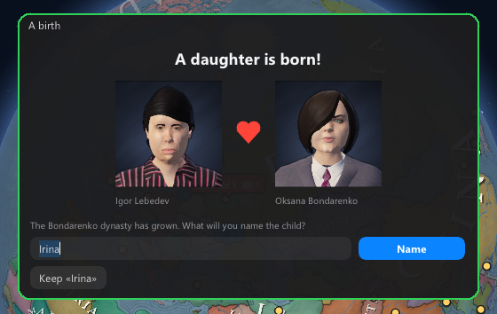
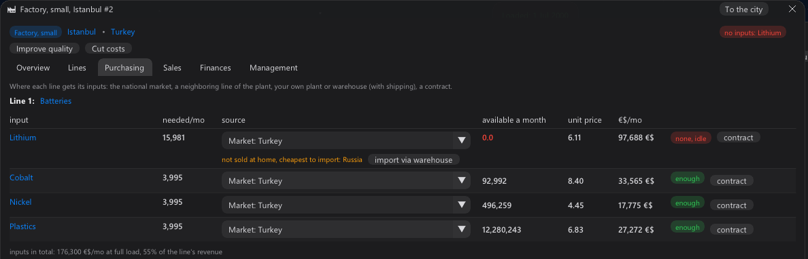
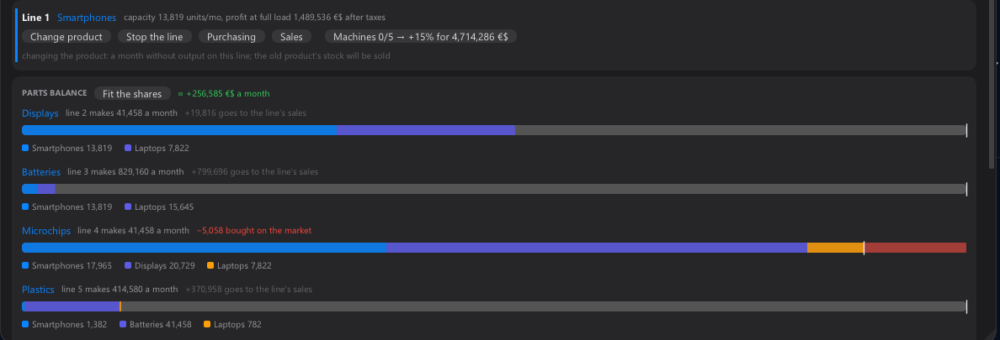
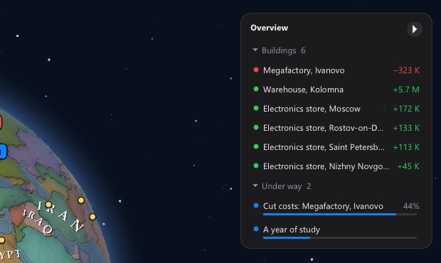

A player on itch made it to billionaire and wrote down in detail what got in the way. This patch is their list,
point by point. Thank you: a review like that is worth a week of playtests. And while the patch was being built, two more
players wrote in — their finds are here too.
The owner's money
✚ "To yourself each month". A slider in the Corporation window: a share of the month's profit goes to your
wallet by itself, legally — only out of what the firm earned, never out of loans, and not while it is in debt. A
billionaire no longer carries millions to their own wallet by hand.
✚ The CEO salary cap grows with the corporation, and the advisor speaks up when your wallet is empty and your firm is rich.
Plants, warehouses, contracts
✚ Parts from your own line. When one line of a plant makes a part for another, the second takes it inside,
even if it used to take it from a warehouse, and a manager on autopilot no longer sends it to the national market.
✚ What a warehouse is for, in one number. The warehouse card shows "Gain a month": what your shops and plants
saved against buying at the market, less the upkeep. The advisor suggests a warehouse only when importing really is cheaper.
✚ Contracts without nagging windows. The offer window shows only the first two times, then the feed and the
phone. And a toggle "Sign profitable contracts automatically": a contract at least a tenth over the unit cost is signed at once.
Family and character
✚ Name your children. When a child is born, the game pauses and shows a window with both parents: what will you name the child? You can rename later too.
✚ Your own character. At the start you choose the childhood and adult life, the age and the traits.
✚ How the family works. Hover the spouse, children, kin, dynasty: a short note on how it works.

People behind the numbers
✚ Five qualities instead of a dozen: Management, Intellect, Charisma, Influence, Intrigue, and Fame apart.
Skills became perks in branches; perk points come from a year of study and from experience.
✚ Intrigue: dig up dirt and keep someone on the hook, provoke, steal blueprints. A failure may give you away,
and the target remembers. Those who hate you plot back.
✚ Intellect: projects on a building — "Improve quality" and "Cut costs" — and "Check the rumours": a true tip
on a share the exchange undervalues, or someone's secret.
Warehouses and imports — from your letters
✚ Why a warehouse "does not work". When a plant takes a good from a warehouse that does not hold it, the
supply tab says so — and what lies there instead: "the warehouse has no copper, it holds copper ore, a copper smelter
has to process it first".
✚ Imports in one click. An input your country's market does not sell (lithium, cobalt…): the supply tab names
the cheapest country, and "import via warehouse" sets up your warehouse by itself. If war or sanctions close every
route, it says that too.

Production
✚ Parts balance. A plant making parts for itself? A bar for each part shows who eats it and how much:
smartphones, displays, laptops — and in red what is missing. No more adding it up in your head.
✚ "Fit the shares" sets the part lines to exactly what your lines take, and tells first what it changes a month.
✚ A neighbour line's shortfall is bought on the market. When a part line can't keep up, the rest is bought instead of standing.
✚ New machines. Every line can be upgraded on its own, 5 stages of +15% capacity; installing takes a month.

The overview on the right
✚ The arrow in the top right corner (or the O key) opens the overview: your buildings with their profit and problems,
what is under way (upgrades, tasks, study), who plots against you, which contracts end soon. A click takes you there.

Progression
✚ The "Progression" tab in the character window: a card for each quality, its two branches, three tiers a perk.
✚ Qualities grow from their own deeds: Management from the buildings you run, Intellect from labs and projects,
Charisma from shops, brands and deals, Influence from posts, groups and lobbying, Intrigue from tasks.
✚ Qualities do what they say: Management gives more buildings under personal management, Influence softens the
prosecutor, Intellect speeds up your labs. The Marketer, Charisma and Management now really bring buyers to a shop.
✚ Balance: a shop manager costs less and raises its turnover; the Agronomist and the Mining engineer are half as
strong; only technology from your own labs can be sold to the world — projects and stolen blueprints stay your plants' know-how.